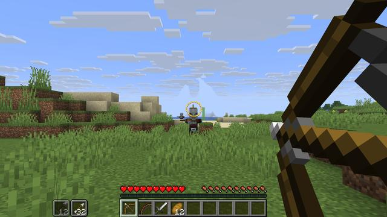
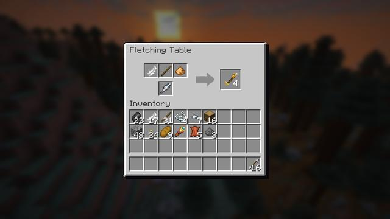

How it plays
Everything Full Draw changes, with the numbers the game uses.
Perfect Release


Draw a bow to full and a thin ring around the crosshair closes. 0.1 s later it glows gold for 0.2 s (the Recurve Bow's for 0.3 s): let go then and the shot is Perfect. It flies dead straight, does ×1.5 damage, chimes, and trails white motes. Let go too soon or too late and the ring says which.
A plain full draw no longer crits for players, as it does in vanilla: the crit is the Perfect Release now. A server can bring vanilla's crit back.
Hold too long and it trembles
From 3 s after full draw the aim starts to sway and the spread grows, up to 3 (a vanilla bow's is 1) at 6 s. The bow shakes in your hand and the string strains. Holding a draw costs you; release or let it down.
Steady Aim
Sneak at full draw to hold your breath: the view narrows (×0.8), the sway stops and the spread is halved. A breath lasts 2.5 s (+1 s per level of Steady), shown as an arc beside the crosshair. When it runs out the tremble starts at once. Let go of sneak and what's left of the breath keeps for the rest of the draw; your lungs refill only between draws, in 4 s.
Headshots and weak spots
An arrow in the head does ×1.5 to a mob and ×1.25 to a player, with a dry thock and a red tick on the crosshair. The head is the part from the neck up. Some creatures are different: a spider's weak spot is the front of its body, a ghast's is its face, a slime has none, and the Bog Lurker's eyes take ×2. Packs can set any creature's weak spot with data (see below).
These are a bow's: a crossbow bolt takes no head, weak-spot or range multiplier (crossbows have no Perfect window either), so it hits a head as it hits a body.
Range and position
Past 20 blocks a hit gains 1% a block, up to ×1.3. A bow's hits from 30 blocks or more show the distance ("Long shot: 47 m"). Closer than 3 blocks, an arrow does ×0.6: up close, a sword is the better weapon.
Where you stand matters too. Sprinting doubles the spread and so does being in the air (both: ×4). Standing still or sneaking halves it.
Perfect × head × range never multiplies a shot by more than ×2.5. With a vanilla bow, before the target's armour (a zombie's 2 points take under 2% off):
| Shot | Damage |
|---|---|
| A full draw, plain | 6 |
| A Perfect Release | 9 |
| A Perfect headshot | 13.5 |
| A Perfect headshot from 40 blocks | 15 |
| A plain shot from closer than 3 blocks | 3.6 |
A vanilla bow's full draw does 6 and crits for 6 to 10. Hold a bow and run
/fulldraw stats to see its numbers, and the whole sum of your last hit.
Bow Bash
Hit a mob with a bow or crossbow in hand and you shove it back about four blocks, for 1 damage. The weapon then rests for 1 s: no bash and no draw. It buys room when something gets too close.
The Quiver
A Quiver anywhere in your inventory holds 4 kinds of arrows, a stack of each. Press R to pick which one your bow or crossbow draws; a strip beside the hotbar shows it and the next ones. Fill it like a bundle: right-click arrows onto it, or it onto arrows, and right-click it onto an empty slot to take the picked stack out. Arrows held in a hand still come first, as in vanilla; then the Quiver's pick; then the rest of your inventory. Only the first Quiver you carry counts.
The Fletching Table works


Use a Fletching Table to open it: a head, a shaft, fletching and an extra part make arrows. Flint, a stick and a feather make 8 arrows, twice the crafting table's 4. Other heads make the other arrows (every recipe is in the arsenal). Each empty slot shows what it takes, and when the parts don't match, the table shows the nearest arrow and the part it takes.
Fletchers sell the new arrows too: Broadhead Arrows from level 2, Bodkin from 3 and Rope from 4, beside their usual trades.
Getting arrows back
When a creature with arrows stuck in it dies, each arrow can drop back: 40% of plain ones, 25% of Broadheads, every Blunt; Flare and Blast Arrows burn up. Arrows in blocks stay there to be picked up for 5 minutes instead of one.
Enchantments
| Enchantment | On | Does | Not with | Where |
|---|---|---|---|---|
| Deadeye I–III | Bows | +0.15 on the head and weak-spot multiplier per level | — | Enchanting table I–II; the Marksman's Recurve carries II; III only from a book made with the Marksman's Eye |
| Steady I–II | Bows | +0.1 s of Perfect window and +1 s of breath per level | Quickdraw | Enchanting table I; II only from a book made with the Marksman's Eye |
| Quickdraw I–III | Bows | −7% draw time per level | Steady | Enchanting table, loot and librarians' book trades |
| Ricochet I–II | Crossbows | Bolts glance off a block once per level, keeping 70% of their speed (not Blast, Flare or Rope Arrows) | Piercing | Enchanting table, loot and librarians' book trades |
The Marksman's Eye makes the top tiers: with a book and a spyglass, Deadeye III; with a book and an amethyst shard, Steady II. An anvil won't merge two lower books into them.
Every shot reads
The string creaks as it draws and stops at full draw. On release a bow twangs by its weight: high for a light bow like the Shortbow, low for a heavy one like the Longbow. The Perfect Release chimes and flashes, a hit ticks, a headshot thocks, and an Arbalest bolt biting through armour clanks. On release the view kicks out a little.
The client config turns off the draw sounds, the hit sounds, your own Perfect chime and flash (others still hear yours), the trail, the view's kick and zoom, the bow's shake and the ring.
Advancements
| Advancement | For |
|---|---|
| Perfect Release | Let go while the ring glows gold. |
| Hold Your Breath | Sneak at full draw to hold your breath and steady the aim. |
| Right Between the Eyes | Hit a creature's head (or weak spot) with an arrow from a bow. |
| Long Shot | Hit a creature with an arrow from a bow, 50 blocks or more away. |
| Rope Trick | Hang a rope from a wall or a ceiling with a Rope Arrow. |
| Shield Breaker | Knock a Shieldbearer's shield aside with a Blunt Arrow, or crack it down with an Arbalest bolt. |
| Grounded | Bring a diving Gale Harrier down with a Perfect Release or an arrow in its head. |
| Eyes on the Water | Hit a Bog Lurker in the eyes with an arrow from a bow while it lurks. |
| Duel at Dusk | Bring down the Marksman of a Ranger's Watchtower with an arrow. |
What changes in vanilla
| Vanilla | With Full Draw |
|---|---|
| A full-draw bow shot always crits | Only a Perfect Release crits (config). |
| Spread is the same wherever you stand | Sprinting and jumping widen it; standing still and sneaking narrow it. |
| Holding a draw costs nothing | After a few seconds the aim trembles. |
| The Fletching Table does nothing | It fletches arrows, plain ones 8 to a craft. The crafting-table arrow recipe still works. |
| Arrows in blocks vanish after a minute | They stay for five, and some come back from what you kill. |
| Skeletons, pillagers and other mobs' arrows | Unchanged. |